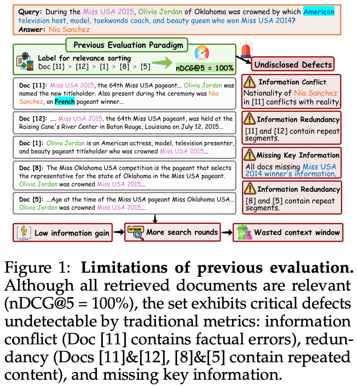
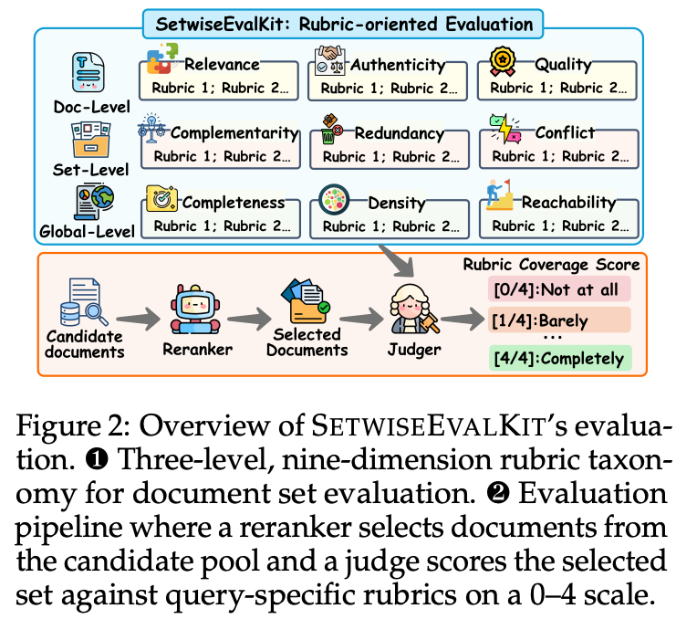
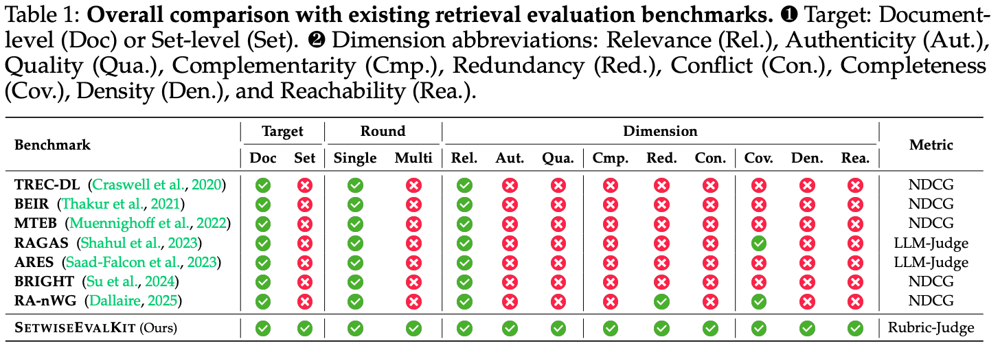
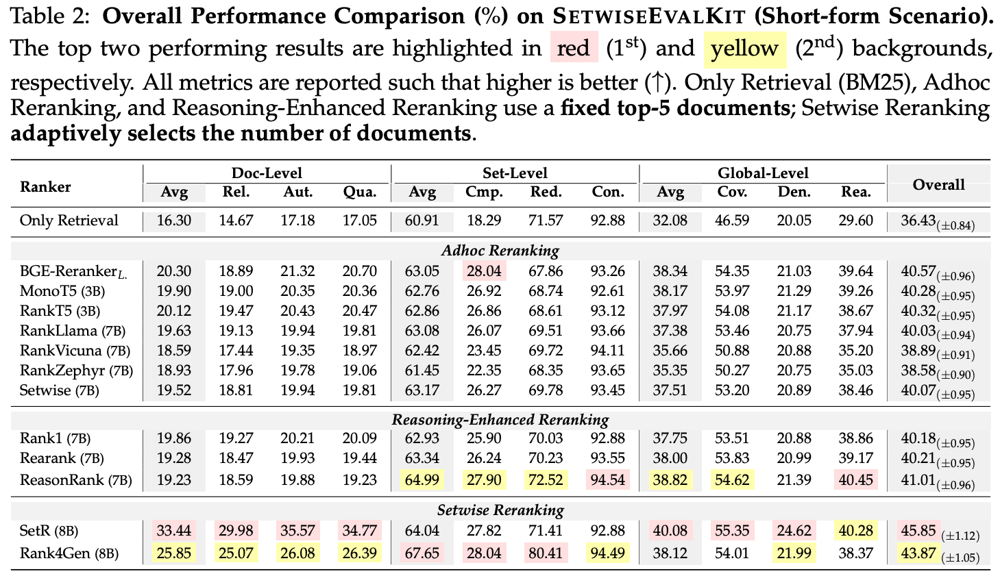
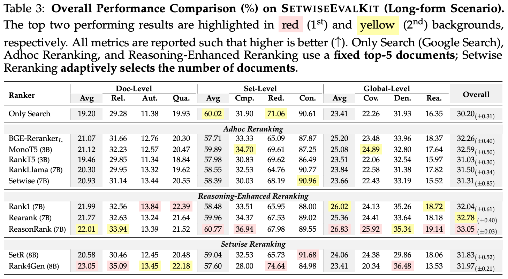
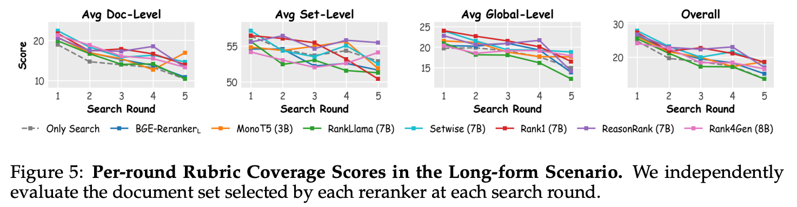
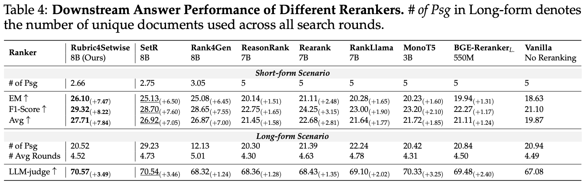

💡 Motivation & SetwiseEvalKit



📊 Main Results




🔍 Case Study

BibTeX
@inproceedings{jiang2026rubric4setwise,
title={Beyond Relevance-Centric Retrieval: Rubric-Oriented Document Set Selection and Ranking},
author={Kailin Jiang and Lei Liu and Jian Xi and Hui Xu and Junlin Liu and Baochen Fu and Shaoqing Ren and Bin Li and Vichwang and Yu Lu and Haibo Shi},
booktitle={},
year={2026}
}